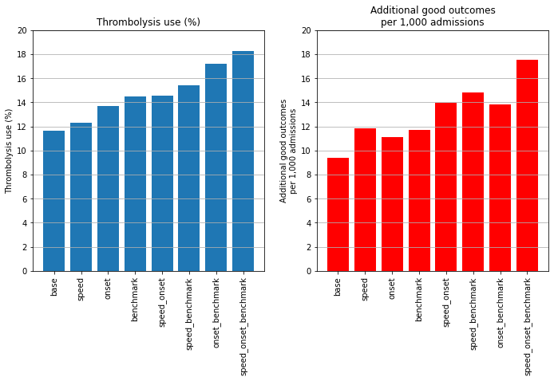
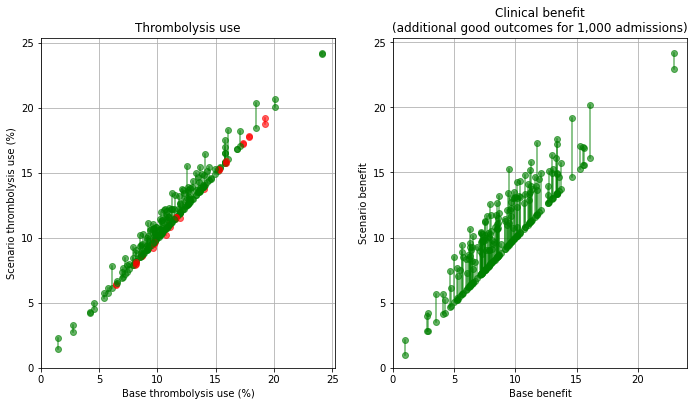
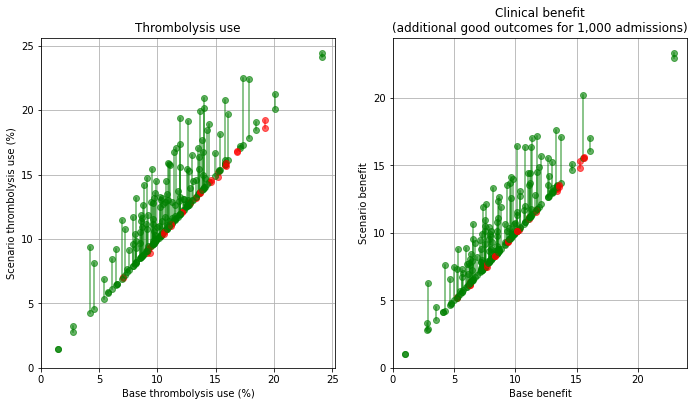
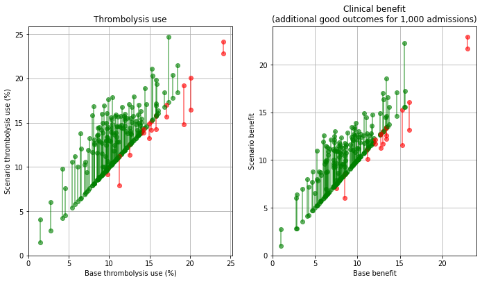
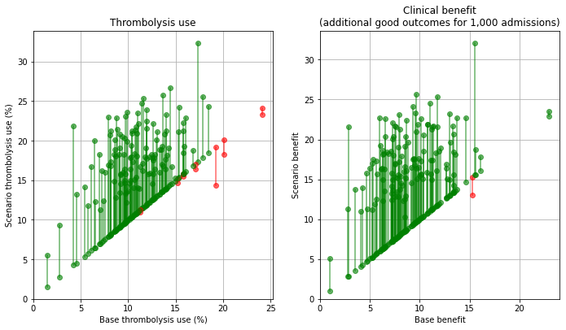
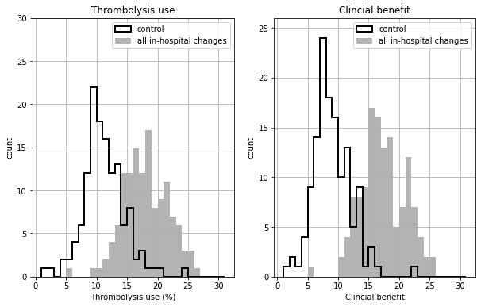
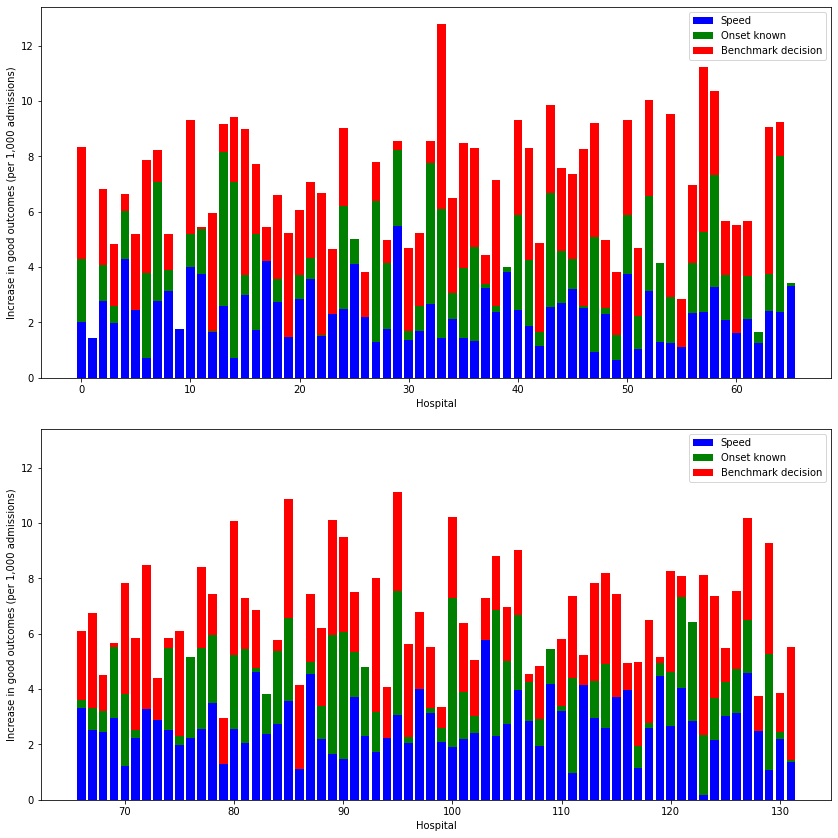
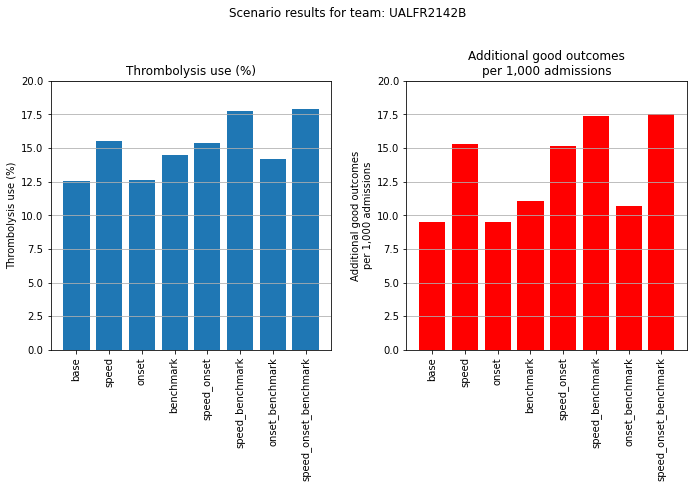
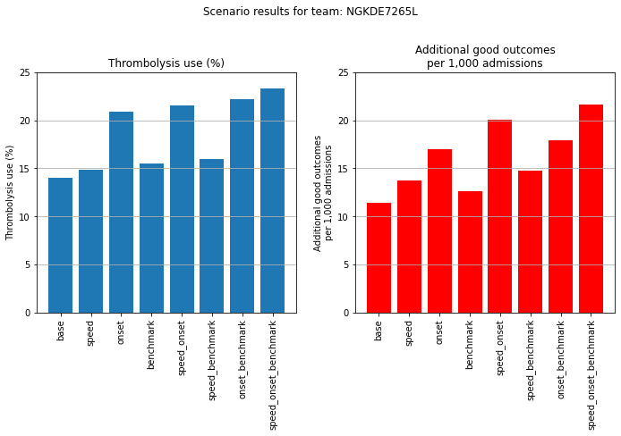
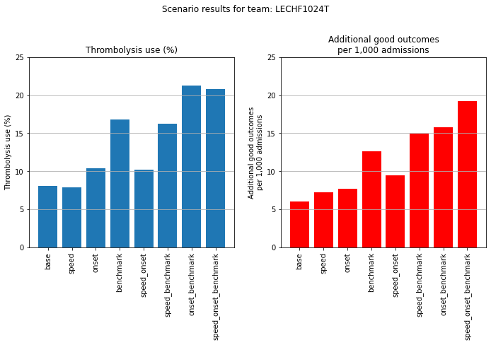

Analysis of alternative pathway scenarios¶
Load libraries¶
import matplotlib.pyplot as plt
import numpy as np
import pandas as pd
from matplotlib.ticker import (MultipleLocator, FormatStrFormatter)
Load data¶
# Scenario results
results = pd.read_csv('./output/scenario_results.csv')
# Pathway performance paramters used in scenarios
performance_base = pd.read_csv('./output/performance_base.csv')
performance_speed = pd.read_csv('./output/performance_speed.csv')
performance_onset = pd.read_csv('./output/performance_onset.csv')
performance_speed_onset = pd.read_csv('./output/performance_speed_onset.csv')
performance_speed_benchmark = \
pd.read_csv('./output/performance_speed_benchmark.csv')
performance_onset_benchmark = \
pd.read_csv('./output/performance_onset_benchmark.csv')
performance_speed_onset_benchmark = \
pd.read_csv('./output/performance_speed_onset_benchmark.csv')
performance_base
| stroke_team | thrombolysis_rate | admissions | 80_plus | onset_known | known_arrival_within_4hrs | onset_arrival_mins_mu | onset_arrival_mins_sigma | scan_within_4_hrs | arrival_scan_arrival_mins_mu | arrival_scan_arrival_mins_sigma | onset_scan_4_hrs | eligable | scan_needle_mins_mu | scan_needle_mins_sigma | |
|---|---|---|---|---|---|---|---|---|---|---|---|---|---|---|---|
| 0 | AGNOF1041H | 0.154839 | 671.666667 | 0.425459 | 0.635236 | 0.681250 | 4.576874 | 0.557598 | 0.965596 | 1.665700 | 1.497966 | 0.935867 | 0.388325 | 3.669602 | 0.664462 |
| 1 | AKCGO9726K | 0.158892 | 1143.333333 | 0.395658 | 0.970845 | 0.428829 | 4.625486 | 0.597451 | 0.955882 | 2.834183 | 0.999719 | 0.908425 | 0.419355 | 2.904479 | 0.874818 |
| 2 | AOBTM3098N | 0.085885 | 500.666667 | 0.485470 | 0.619174 | 0.629032 | 4.603918 | 0.584882 | 0.935043 | 3.471419 | 1.254744 | 0.846435 | 0.267819 | 3.694918 | 0.518929 |
| 3 | APXEE8191H | 0.098634 | 439.333333 | 0.515679 | 0.716237 | 0.608051 | 4.590357 | 0.496452 | 0.966899 | 3.312930 | 0.714465 | 0.904505 | 0.258964 | 3.585094 | 0.751204 |
| 4 | ATDID5461S | 0.090689 | 275.666667 | 0.533546 | 0.573156 | 0.660338 | 4.427826 | 0.591373 | 0.878594 | 4.125690 | 0.549301 | 0.865455 | 0.315126 | 3.497262 | 0.608126 |
| ... | ... | ... | ... | ... | ... | ... | ... | ... | ... | ... | ... | ... | ... | ... | ... |
| 127 | YPKYH1768F | 0.105193 | 250.333333 | 0.321767 | 0.585885 | 0.720455 | 4.436404 | 0.569248 | 0.952681 | 3.779215 | 0.872809 | 0.844371 | 0.305882 | 3.982100 | 0.683223 |
| 128 | YQMZV4284N | 0.104186 | 358.333333 | 0.508511 | 0.945116 | 0.462598 | 4.664536 | 0.494740 | 0.948936 | 3.574735 | 0.912298 | 0.798206 | 0.308989 | 3.285165 | 0.463749 |
| 129 | ZBVSO0975W | 0.081602 | 449.333333 | 0.442130 | 0.465134 | 0.688995 | 4.562051 | 0.510524 | 0.972222 | 2.860226 | 0.990966 | 0.930952 | 0.273657 | 3.606046 | 0.575788 |
| 130 | ZHCLE1578P | 0.112647 | 796.000000 | 0.484694 | 0.733668 | 0.671233 | 4.606557 | 0.546648 | 0.949830 | 3.306916 | 0.842940 | 0.892569 | 0.262788 | 3.276043 | 0.795401 |
| 131 | ZRRCV7012C | 0.063058 | 597.333333 | 0.469504 | 0.779576 | 0.504653 | 4.636283 | 0.485394 | 0.977305 | 3.743456 | 0.662710 | 0.851959 | 0.189097 | 3.261270 | 0.803624 |
132 rows × 15 columns
Collate key results¶
Collate key results together in a DataFrame.
# Add admission numbers to results
admissions = performance_base[['stroke_team', 'admissions']]
results = results.merge(
admissions, how='left', left_on='stroke_team', right_on='stroke_team')
# Calculate numbers thrombolysed
results['thrombolysed'] = \
results['admissions'] * results['Percent_Thrombolysis_(mean)'] / 100
# Calculate additional good outcomes
results['add_good_outcomes'] = (results['admissions'] *
results['Additional_good_outcomes_per_1000_patients_(mean)'] / 1000)
# Get key results
key_results = pd.DataFrame()
key_results['stroke_team'] = results['stroke_team']
key_results['scenario'] = results['scenario']
key_results['admissions'] = results['admissions']
key_results['thrombolysis_rate'] = results['Percent_Thrombolysis_(mean)']
key_results['additional_good_outcomes_per_1000_patients'] = \
results['Additional_good_outcomes_per_1000_patients_(mean)']
key_results['patients_receiving_thrombolysis'] = results['thrombolysed']
key_results['add_good_outcomes'] = results['add_good_outcomes']
key_results
| stroke_team | scenario | admissions | thrombolysis_rate | additional_good_outcomes_per_1000_patients | patients_receiving_thrombolysis | add_good_outcomes | |
|---|---|---|---|---|---|---|---|
| 0 | AGNOF1041H | base | 671.666667 | 15.36 | 12.97 | 103.168000 | 8.711517 |
| 1 | AKCGO9726K | base | 1143.333333 | 15.17 | 13.42 | 173.443667 | 15.343533 |
| 2 | AOBTM3098N | base | 500.666667 | 7.90 | 5.74 | 39.552667 | 2.873827 |
| 3 | APXEE8191H | base | 439.333333 | 10.00 | 7.23 | 43.933333 | 3.176380 |
| 4 | ATDID5461S | base | 275.666667 | 9.22 | 6.33 | 25.416467 | 1.744970 |
| ... | ... | ... | ... | ... | ... | ... | ... |
| 1051 | YPKYH1768F | speed_onset_benchmark | 250.333333 | 21.76 | 23.10 | 54.472533 | 5.782700 |
| 1052 | YQMZV4284N | speed_onset_benchmark | 358.333333 | 13.92 | 12.27 | 49.880000 | 4.396750 |
| 1053 | ZBVSO0975W | speed_onset_benchmark | 449.333333 | 21.27 | 20.40 | 95.573200 | 9.166400 |
| 1054 | ZHCLE1578P | speed_onset_benchmark | 796.000000 | 14.08 | 12.94 | 112.076800 | 10.300240 |
| 1055 | ZRRCV7012C | speed_onset_benchmark | 597.333333 | 12.33 | 11.31 | 73.651200 | 6.755840 |
1056 rows × 7 columns
key_results.to_csv('./output/key_scenario_results.csv')
Overall results¶
columns = ['admissions', 'patients_receiving_thrombolysis', 'add_good_outcomes']
summary_stats = key_results.groupby('scenario')[columns].sum()
summary_stats['percent_thrombolysis'] = (100 *
summary_stats['patients_receiving_thrombolysis'] / summary_stats['admissions'])
summary_stats['add_good_outcomes_per_1000'] = (1000 *
summary_stats['add_good_outcomes'] / summary_stats['admissions'])
# Re-order
order = {'base': 1, 'speed': 2, 'onset': 3, 'benchmark': 4, 'speed_onset': 5,
'speed_benchmark': 6, 'onset_benchmark':7, 'speed_onset_benchmark': 8}
df_order = [order[x] for x in list(summary_stats.index)]
summary_stats['order'] = df_order
summary_stats.sort_values('order', inplace=True)
# Select cols of interest
summary_stats = summary_stats[['percent_thrombolysis', 'add_good_outcomes_per_1000']]
base_thrombolysis = summary_stats.loc['base']['percent_thrombolysis']
summary_stats['Percent increase thrombolysis'] = (100 * (
summary_stats['percent_thrombolysis'] / base_thrombolysis -1))
base_add_good_outcomes = summary_stats.loc['base']['add_good_outcomes_per_1000']
summary_stats['Percent increase good_outcomes'] = (100 * (
summary_stats['add_good_outcomes_per_1000'] / base_add_good_outcomes -1))
summary_stats = summary_stats.round(2)
summary_stats.to_csv('./output/summary_net_results.csv')
summary_stats
| percent_thrombolysis | add_good_outcomes_per_1000 | Percent increase thrombolysis | Percent increase good_outcomes | |
|---|---|---|---|---|
| scenario | ||||
| base | 11.61 | 9.41 | 0.00 | 0.00 |
| speed | 12.33 | 11.86 | 6.26 | 26.00 |
| onset | 13.68 | 11.09 | 17.85 | 17.81 |
| benchmark | 14.51 | 11.70 | 25.04 | 24.28 |
| speed_onset | 14.53 | 13.99 | 25.16 | 48.62 |
| speed_benchmark | 15.44 | 14.82 | 33.00 | 57.49 |
| onset_benchmark | 17.18 | 13.86 | 48.06 | 47.22 |
| speed_onset_benchmark | 18.26 | 17.55 | 57.35 | 86.49 |
fig = plt.figure(figsize=(10,7))
ax1 = fig.add_subplot(121)
x = list(summary_stats.index)
y1 = summary_stats['percent_thrombolysis'].values
ax1.bar(x,y1)
ax1.set_ylim(0,20)
plt.xticks(rotation=90)
plt.yticks(np.arange(0,22,2))
ax1.set_title('Thrombolysis use (%)')
ax1.set_ylabel('Thrombolysis use (%)')
ax1.grid(axis = 'y')
ax2 = fig.add_subplot(122)
x = list(summary_stats.index)
y1 = summary_stats['add_good_outcomes_per_1000'].values
ax2.bar(x,y1, color='r')
ax2.set_ylim(0,20)
plt.xticks(rotation=90)
plt.yticks(np.arange(0,22,2))
ax2.set_title('Additional good outcomes\nper 1,000 admissions')
ax2.set_ylabel('Additional good outcomes\nper 1,000 admissions')
ax2.grid(axis = 'y')
plt.tight_layout(pad=2)
plt.savefig('./output/global_change.jpg', dpi=300)
plt.show()

def compare_plot(base_rx, test_rx, base_benefit, test_benefit, name):
# Set up sublot
fig, ax = plt.subplots(1,2, figsize=(10,6))
# Thrombolysis use
x = base_rx
y = test_rx
for i in range(len(x)):
if y[i] >= x[i]:
ax[0].plot([x[i],x[i]],[x[i],y[i]],'g-o', alpha=0.6)
else:
ax[0].plot([x[i],x[i]],[x[i],y[i]],'r-o', alpha=0.6)
ax[0].set_xlim(0)
ax[0].set_ylim(0)
ax[0].grid()
ax[0].set_xlabel('Base thrombolysis use (%)')
ax[0].set_ylabel('Scenario thrombolysis use (%)')
ax[0].set_title('Thrombolysis use')
# Benefit
x = base_benefit
y = test_benefit
for i in range(len(x)):
if y[i] >= x[i]:
ax[1].plot([x[i],x[i]],[x[i],y[i]],'g-o', alpha=0.6)
else:
ax[1].plot([x[i],x[i]],[x[i],y[i]],'r-o', alpha=0.6)
ax[1].set_xlim(0)
ax[1].set_ylim(0)
ax[1].grid()
ax[1].set_xlabel('Base benefit')
ax[1].set_ylabel(f'Scenario benefit')
ax[1].set_title('Clinical benefit\n(additional good outcomes for 1,000 admissions)')
# Make axes places consistent
ax[0].xaxis.set_major_locator(MultipleLocator(5))
ax[0].yaxis.set_major_locator(MultipleLocator(5))
ax[1].xaxis.set_major_locator(MultipleLocator(5))
ax[1].yaxis.set_major_locator(MultipleLocator(5))
ax[0].xaxis.set_major_formatter(FormatStrFormatter('%.0f'))
ax[0].yaxis.set_major_formatter(FormatStrFormatter('%.0f'))
ax[1].xaxis.set_major_formatter(FormatStrFormatter('%.0f'))
ax[1].yaxis.set_major_formatter(FormatStrFormatter('%.0f'))
fig.tight_layout(pad=2)
plt.savefig(f'{name}.jpg', dpi=300)
Plot effect of speed¶
base_rx = key_results[key_results['scenario'] == 'base']['thrombolysis_rate'].values
scenario_rx = key_results[key_results['scenario'] == 'speed']['thrombolysis_rate'].values
base_benfit = key_results[key_results['scenario'] == 'base']['additional_good_outcomes_per_1000_patients'].values
scenario_benefit = key_results[key_results['scenario'] == 'speed']['additional_good_outcomes_per_1000_patients'].values
compare_plot(base_rx, scenario_rx, base_benfit, scenario_benefit,
'./output/hospitals_speed')

Plot effect of onset-known¶
base_rx = key_results[key_results['scenario'] == 'base']['thrombolysis_rate'].values
scenario_rx = key_results[key_results['scenario'] == 'onset']['thrombolysis_rate'].values
base_benfit = key_results[key_results['scenario'] == 'base']['additional_good_outcomes_per_1000_patients'].values
scenario_benefit = key_results[key_results['scenario'] == 'onset']['additional_good_outcomes_per_1000_patients'].values
compare_plot(base_rx, scenario_rx, base_benfit, scenario_benefit,
'./output/hospitals_onset')

Plot effect of benchmark decisions¶
base_rx = key_results[key_results['scenario'] == 'base']['thrombolysis_rate'].values
scenario_rx = key_results[key_results['scenario'] == 'benchmark']['thrombolysis_rate'].values
base_benfit = key_results[key_results['scenario'] == 'base']['additional_good_outcomes_per_1000_patients'].values
scenario_benefit = key_results[key_results['scenario'] == 'benchmark']['additional_good_outcomes_per_1000_patients'].values
compare_plot(base_rx, scenario_rx, base_benfit, scenario_benefit,
'./output/hospitals_benchmark')

Plot effect of all sceanrio changes¶
base_rx = key_results[key_results['scenario'] == 'base']['thrombolysis_rate'].values
scenario_rx = key_results[key_results['scenario'] == 'speed_onset_benchmark']['thrombolysis_rate'].values
base_benfit = key_results[key_results['scenario'] == 'base']['additional_good_outcomes_per_1000_patients'].values
scenario_benefit = key_results[key_results['scenario'] == 'speed_onset_benchmark']['additional_good_outcomes_per_1000_patients'].values
compare_plot(base_rx, scenario_rx, base_benfit, scenario_benefit,
'./output/hospitals_speed_onset_benchmark')

Histogram of shift in distribution of thrombolysis use and benefit¶
base_rx = key_results[key_results['scenario'] == 'base']['thrombolysis_rate'].values
scenario_rx = key_results[key_results['scenario'] == 'speed_onset_benchmark']['thrombolysis_rate'].values
base_benfit = key_results[key_results['scenario'] == 'base']['additional_good_outcomes_per_1000_patients'].values
scenario_benefit = key_results[key_results['scenario'] == 'speed_onset_benchmark']['additional_good_outcomes_per_1000_patients'].values
fig, ax = plt.subplots(1,2,figsize=(10,6))
bins = np.arange(1,32)
ax[0].hist(base_rx, bins = bins, color='k', linewidth=2,
label='control', histtype='step')
ax[0].hist(scenario_rx, bins = bins, color='0.7', linewidth=2,
label='all in-hospital changes', histtype='stepfilled')
ax[0].grid()
ax[0].set_xlabel('Thrombolysis use (%)')
ax[0].set_ylabel('count')
ax[0].set_ylim(0,30)
ax[0].yaxis.set_major_locator(MultipleLocator(5))
ax[0].set_title('Thrombolysis use')
ax[0].legend()
ax[1].hist(base_benfit, bins = bins, color='k', linewidth=2,
label='control', histtype='step')
ax[1].hist(scenario_benefit, bins = bins, color='0.7', linewidth=2,
label='all in-hospital changes', histtype='stepfilled')
ax[1].grid()
ax[1].set_xlabel('Clincial benefit')
ax[1].set_ylabel('count')
ax[1].set_ylim(0,26)
ax[1].yaxis.set_major_locator(MultipleLocator(5))
ax[1].set_title('Clincial benefit')
ax[1].legend()
plt.savefig('./output/histograms.jpg', dpi=300)

Bar charts of individual changes at all hospitals¶
Here we summarise the effect of individual changes at each hospital.
Note that actual combined changes will be more than additive, but these plots give an indication of what the most significant effects will be across all hospitals.
# Pivot results by scenario type
results_pivot = key_results.pivot(index='stroke_team', columns='scenario')
hosp_per_chart = np.ceil(results_pivot.shape[0]/2)
# Thrombolysis chart
fig, axs = plt.subplots(2,1, figsize=(12,12), sharey=True)
# 4 subplots
i=0
for ax in axs.flat:
# Get subgroup of data for plot
start = int(hosp_per_chart * i)
end = int(hosp_per_chart * (i + 1))
subgroup = results_pivot.iloc[start:end]
# Get effect of speed (avoid negatives)
speed = subgroup['thrombolysis_rate']['speed'] - subgroup['thrombolysis_rate']['base']
speed = list(map (lambda x: max(0,x), speed))
# Get effect of known onset (avoid negatives)
onset = subgroup['thrombolysis_rate']['onset'] - subgroup['thrombolysis_rate']['base']
onset = list(map (lambda x: max(0,x), onset))
# Get effect of decision (avoid negatives)
eligible = subgroup['thrombolysis_rate']['benchmark'] - subgroup['thrombolysis_rate']['base']
eligible = list(map (lambda x: max(0,x), eligible))
x = range(start, start + subgroup.shape[0])
ax.bar(x, speed, color='b', label = 'Speed')
ax.bar(x, onset, color='g', bottom = speed, label = 'Onset known')
ax.bar(x, eligible, color='r', bottom = np.array(speed) + np.array(onset),
label = 'Benchmark decision')
ax.legend(loc='upper right')
ax.set_xlabel('Hospital')
ax.set_ylabel('Increase in thrombolysis use (percentage points)')
# Put y tick label son all charts
ax.yaxis.set_tick_params(which='both', labelbottom=True)
i += 1
plt.tight_layout(pad=2)
plt.savefig('./output/all_hosp_bar_thrombolysis.jpg', dpi=300)
plt.show()

hosp_per_chart = np.ceil(results_pivot.shape[0]/2)
# Outcomes chart
fig, axs = plt.subplots(2,1, figsize=(12,12), sharey=True)
# 4 subplots
i=0
for ax in axs.flat:
# Get subgroup of data for plot
start = int(hosp_per_chart * i)
end = int(hosp_per_chart * (i + 1))
subgroup = results_pivot.iloc[start:end]
# Get effect of speed (avoid negatives)
speed = subgroup['additional_good_outcomes_per_1000_patients']['speed'] - \
subgroup['additional_good_outcomes_per_1000_patients']['base']
speed = list(map (lambda x: max(0,x), speed))
# Get effect of known onset (avoid negatives)
onset = subgroup['additional_good_outcomes_per_1000_patients']['onset'] - \
subgroup['additional_good_outcomes_per_1000_patients']['base']
onset = list(map (lambda x: max(0,x), onset))
# Get effect of decision (avoid negatives)
eligible = subgroup['additional_good_outcomes_per_1000_patients']['benchmark'] - \
subgroup['additional_good_outcomes_per_1000_patients']['base']
eligible = list(map (lambda x: max(0,x), eligible))
x = range(start, start + subgroup.shape[0])
ax.bar(x, speed, color='b', label = 'Speed')
ax.bar(x, onset, color='g', bottom = speed, label = 'Onset known')
ax.bar(x, eligible, color='r', bottom = np.array(speed) + np.array(onset),
label = 'Benchmark decision')
ax.legend(loc='upper right')
ax.set_xlabel('Hospital')
ax.set_ylabel('Increase in good outcomes (per 1,000 admissions)')
# Put y tick label son all charts
ax.yaxis.set_tick_params(which='both', labelbottom=True)
i += 1
plt.tight_layout(pad=2)
plt.savefig('./output/all_hosp_bar_outcomes.jpg', dpi=300)
plt.show()

Results for individual hospitals¶
We may plot more detailed results at an individual hospital level.
def plot_hospital(data, id):
hospital_data = data.iloc[id]
max_val = max(hospital_data['thrombolysis_rate'].max(),
hospital_data['additional_good_outcomes_per_1000_patients'].max())
max_val = 5 * int(max_val/5) + 5
team = hospital_data.name
# Sort results
df = pd.DataFrame()
df['thrombolysis_rate'] = hospital_data['thrombolysis_rate']
df['outcomes'] = hospital_data['additional_good_outcomes_per_1000_patients']
order = {'base': 1, 'speed': 2, 'onset': 3, 'benchmark': 4, 'speed_onset': 5,
'speed_benchmark': 6, 'onset_benchmark':7, 'speed_onset_benchmark': 8}
df_order = [order[x] for x in list(df.index)]
df['order'] = df_order
df.sort_values('order', inplace=True)
fig = plt.figure(figsize=(10,7))
ax1 = fig.add_subplot(121)
x = df['thrombolysis_rate'].index
y1 = df['thrombolysis_rate']
ax1.bar(x,y1)
plt.xticks(rotation=90)
ax1.set_title('Thrombolysis use (%)')
ax1.set_ylabel('Thrombolysis use (%)')
ax1.set_ylim(0, max_val)
ax1.grid(axis = 'y')
ax2 = fig.add_subplot(122)
y1 = df['outcomes']
ax2.bar(x,y1, color='r')
plt.xticks(rotation=90)
ax2.set_title('Additional good outcomes\nper 1,000 admissions')
ax2.set_ylabel('Additional good outcomes\nper 1,000 admissions')
ax2.set_ylim(0, max_val)
ax2.grid(axis = 'y')
plt.suptitle(f'Scenario results for team: {team}')
plt.tight_layout(pad=2)
plt.savefig(f'./output/hosp_results_{team}.jpg', dpi=300)
plt.show()
An example where speed makes most difference.
plot_hospital(results_pivot, 103)

An example where determining stroke onset time makes most difference.
plot_hospital(results_pivot, 64)

An example where applying benchmark decion-making makes most difference.
plot_hospital(results_pivot, 54)
